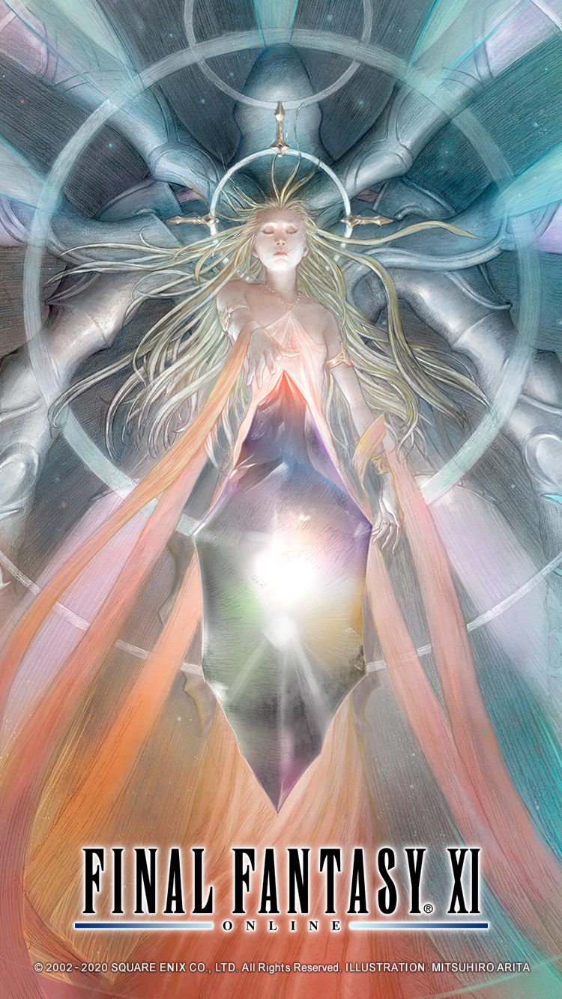

파이널 판타지 11 시작하기

파판11 어떻게 시작하나요?
파이널 판타지 11은 2002년에 처음으로 발매되어 현재까지 서비스를 이어가고 있는 초창기 MMORPG입니다. 20년이 넘는 시간동안 여러 업데이트가 있었지만 근본적인 시스템은 2002년도 당시에 만들어진 것을 사용하고 있어, 현재의 기준으로는 접근성이 좋지 못한 부분이 다소 존재합니다.
본 페이지에는 그럼에도 불구하고 파이널 판타지 11을 플레이하고자 하는 분들께 참고가 될만한 문서들을 모아두었습니다.